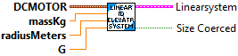
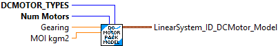
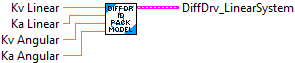
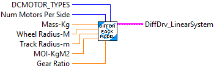
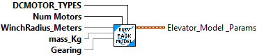
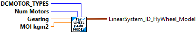
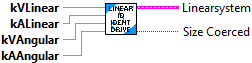
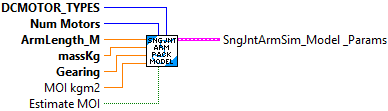

Create a state-space model of a DC motor system. The states of the system are [angular position, angular velocity], inputs are [voltage], and outputs are [angular position, angular velocity].
The DC Motor linear system is defined as:
- states:
- angular position (rad)
- angular velocity (rad/sec)
- inputs:
- motor voltage
- outputs:
- angular position (rad)
- angular velocity (rad/sec)
Inputs:
- motor -- The motor (or gearbox)
- jKgMetersSquared -- The moment of inertia J of the motor and attached load. (Must be > 0)
- G -- The reduction between motor and drum, as a ratio of output to input. (Must be > 0)
Outputs:
- LinearSystem -- A LinearSystem representing the given characterized constants.
- Error -- A boolean indicating an error occured creating the system. A value of TRUE indicates an error.

Create a state-space model of a differential drive drivetrain. This linear system is defined as follows:
- states
- left velocity (m/s)
- right velocity (m/s)
- inputs
- left voltage (volts)
- right voltage(volts)
- outputs
- left velocity (m/s)
- right velocity (m/s)
Inputs:
- motor -- the gearbox representing the motors driving the drivetrain.
- massKg -- the mass of the robot.
- rMeters -- the radius of the wheels in meters.
- rbMeters -- the radius of the base (half the track width) in meters.
- JKgMetersSquared -- the moment of inertia of the robot.
- G -- the gearing reduction as output over input.
Outputs:
- LinearSystem -- A LinearSystem cluster representing a differential drivetrain.
- SizeCoerced -- A boolean indicating that sizes had to be adjusted. A value of TRUE indicates an error.

Create a state-space model of an elevator system. The states of the system are [position, velocity]?, inputs are [voltage], and outputs are [position].
Inputs:
- motor -- The motor (or gearbox) attached to the arm.
- massKg -- The mass of the elevator carriage, in kilograms.
- radiusMeters -- The radius of thd driving drum of the elevator, in meters.
- G -- The reduction between motor and drum, as a ratio of output to input.
Outputs:
- LinearSystem -- A LinearSystem representing the given characterized constants.
- SizeCoerced -- A boolean indicating that sizes had to be adjusted. A value of TRUE indicates an error.

Create a state-space model of a flywheel system. The states of the system are [angular velocity], inputs are [voltage], and outputs are [angular velocity].
The flywheel linear system definition is:
- States
- angular velocity (Rad/Sec)
- Inputs:
- motor voltage
- Outputs:
- angular velocity (rad/sec)
Inputs:
- motor -- The motor (or gearbox) attached to the arm.
- jKgMetersSquared -- The moment of inertia J of the flywheel.
- G -- The reduction between motor and drum, as a ratio of output to input.
Outputs:
- LinearSystem -- A LinearSystem representing the given characterized constants.
- Error -- A boolean indicating an error occured creating the system. A value of TRUE indicates an error.

Create a state-space model of a single jointed arm system. The states of the system are [angle, angular velocity], inputs are [voltage], and outputs are [angle].
Inputs:
- motor -- The motor (or gearbox) attached to the arm.
- jKgSquaredMeters -- The moment of inertia J of the arm.
- G -- The gearing between the motor and arm, in output over input. Most of the time this will be greater than 1.
Outputs:
- LinearSystem -- A LinearSystem representing the given characterized constants.
- Error -- A boolean indicating an error occured creating the system. A value of TRUE indicates an error.

Pack the model parameters used to create a DC Motor Linear System.
Inputs
- DCMOTOR_TYPE -- enum -- Model of motor being used.
- Num Numtors -- integer -- Number of motors used.
- Gearing -- double -- Gear ratio. (Input speed / Output Speed )
- MOI -- double -- Moment of inertia - kg m^2
Outputs:
- LinearSystemId DC Motor Model -- cluster -- packed model parameters.

Creates a Differential Drive Train linear system from the drive train characterization (identification) data.
The linear system is define as:
- states
- left velocity (m/s)
- right velocity (m/s)
- inputs
- left voltage (volts)
- right voltage(volts)
- outputs
- left velocity (m/s)
- right velocity (m/s)
Inputs:
- Kv Linear -- double -- Linear velocity constant (volts/(meter/sec)
- Ka Linear -- double -- Linear acceleration constant (volts/(meter/sec^2))
- Kv Angular -- double -- Rotational velocity constant (volts/(meter/sec)
- Ka Angular -- double -- Rotational acceleration constant (volts/(meter/sec^2))
Outputs:
- DiffDrive Linear Syste -- Linear System -- The resulting differential drive linear system.

Creates a Differential Drive Train linear system from the physical parameters of the robot..
The linear system is defined as:
- states
- left velocity (m/s)
- right velocity (m/s)
- inputs
- left voltage (volts)
- right voltage(volts)
- outputs
- left velocity (m/s)
- right velocity (m/s)
Inputs:
- DC Motor Type -- enum -- Model of the drive motor
- Num Motors Per Side -- integer -- Number of motoes on each side of the drive
- Mass -- double -- Robot mass (kg)
- Wheel Radius -- double -- Radius of drive wheel (meters) Note this is radius, not diameter.
- Track Radius -- double -- 1/2 of the distance between wheels (meters). This is effective radius which may be more than the physical radius.
- MOI -- double -- Moment of inertia (kg m^2)
- Gear Ratio -- double -- Drive gear ratio (Input/Output)
Output:
- DiffDrive Linear System -- Linear System -- Created differential drive linear system

Pack the physical parameters describing an elevator linear system.
Inputs:
- DC Motor -- enum -- Model of the motor used for the flywheel
- Num Motors -- integer -- Number of flywheel drive motors
- Winch Radius -- double -- Radius of the winch (meters). Note this is radius, not diameter.
- Mass -- double -- Elevator mass (kg)
- Gearing -- double -- Gear ratio (Input/Output)
Outputs:
- Elevator Model Params -- cluster -- Packed elevator physical modeling parameters

Pack the physical parameters describing a FlyWheel system.
Inputs:
- DC Motor -- enum -- Model of the motor used for the flywheel
- Num Motors -- integer -- Number of flywheel drive motors
- Gearing -- double -- Gear ratio (Input/Output)
- MOI -- double -- Moment of inertia (kg m^2)
Outputs:
- FlyWheel Model Params -- cluster -- Packed flywheel physical modeling parameters

Identify a standard differential drive drivetrain, given the drivetrain's kV and kA in both linear (volts/(meter/sec) and volts/(meter/sec^2)) and angular (volts/(meter/sec) and volts/(meter/sec^2)) cases. This can be found using frc-characterization. The linear system is defined as follows:
- states
- left velocity (m/s)
- right velocity (m/s)
- inputs
- left voltage (volts)
- right voltage(volts)
- outputs
- left velocity (m/s)
- right velocity (m/s)
Inputs:
- kVLinear -- The linear velocity gain, volts per (meter per second).
- kALinear -- The linear acceleration gain, volts per (meter per second squared).
- kVAngular -- The angular velocity gain, volts per (meter per second).
- kAAngular -- The angular acceleration gain, volts per (meter per second squared).
Outputs:
- LinearSystem -- A LinearSystem representing the given characterized constants.
- SizeCoerced -- A boolean indicating an error occured creating the system. A value of TRUE indicates an error.
Additional information
https://github.com/wpilibsuite/frc-characterization

Identify a position system from it's kV (volts/(unit/sec)) and kA (volts/(unit/sec^2). These constants cam be found using frc-characterization. The states of the system are [position, velocity]?, inputs are [voltage], and outputs are [position].
The distance unit you choose MUST be an SI unit (i.e. meters or radians). You can use the Util.Units subVI for converting between unit types.
Inputs:
- kV -- The velocity gain, in volts per (units per second)
- kA -- The acceleration gain, in volts per (units per second squared)
Outputs:
- LinearSystem -- A LinearSystem representing the given characterized constants.
- SizeCoerced -- A value of TRUE indicates an unexpected error occured.
Additional information:
See https://github.com/wpilibsuite/frc-characterization @SuppressWarnings("ParameterName")

Identify a velocity system from it's kV (volts/(unit/sec)) and kA (volts/(unit/sec^2). These constants cam be found using frc-characterization. The states of the system are [velocity], inputs are [voltage], and outputs are [velocity].
The distance unit you choose MUST be an SI unit (i.e. meters or radians). You can use the Util.Units subVI for converting between unit types.
Inputs:
- kV -- The velocity gain, in volts per (units per second)
- kA -- The acceleration gain, in volts per (units per second squared)
Outputs:
- LinearSystem -- A LinearSystem representing the given characterized constants.
- SizeCoerced -- A value of TRUE indicates an unexpected error occured.
Additional information:
See https://github.com/wpilibsuite/frc-characterization

Pack the physical parameters describing a single jointed arm linear system.
Inputs:
- DC Motor -- enum -- Model of the motor used for the single jointed arm
- Num Motors -- integer -- Number of drive motors
- Arm Length -- double -- Length of arm (meters).
- Mass -- double -- Elevator mass (kg)
- Gearing -- double -- Gear ratio (Input/Output)
- MOI -- double -- Moment of inertia (kg m^2)
- Estimate MOI -- boolean -- If TRUE, estimate MOI from mass and arm length. (Default: TRUE)
Outputs:
- Single Jointed Arm Model Params -- cluster -- Packed single jointed arm physical modeling parameters